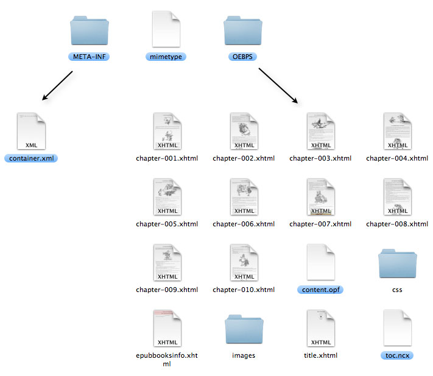

The EPUB file format is basically a ZIP-file with a defined set of contents. The first file in the container is a file by the ASCII name of “mimetype” which holds the MIME type for the ZIP container. This file must be treated a bit special as the contents are defined and the file must not be compressed, nor encrypted and there must be no extra fields in it’s ZIP header.
The EPUB also have a META-INF folder that contains a file named container.xml. This declares the format of the publication(s) and points to the main entry, which in most cases is content.opf. If there is a table of contents (toc.ncx) the main entry will point to it.
The OCF (Open Container Format) specification states that one can add multiple publications to one EPUB. For instance an OEBPS (aka EPUB) and one PDF. Or two OEBPS publications in different languages. While the current API does handle this – the Ant task or UI action does not.
The actual content of an EPUB version 2.0.1 formatted publication may be of the following OPS Core Media types:
Other types may be used, but then a fallback item must be specified for reading systems that does not support the type. This tooling currently does not support the fallback mechanism.

The illustration shows the contents of an example publication. The marked files and folders marked are ones created by the EPUB tooling.